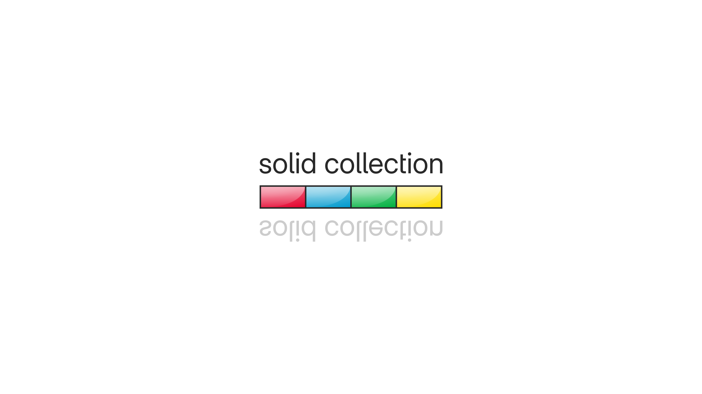
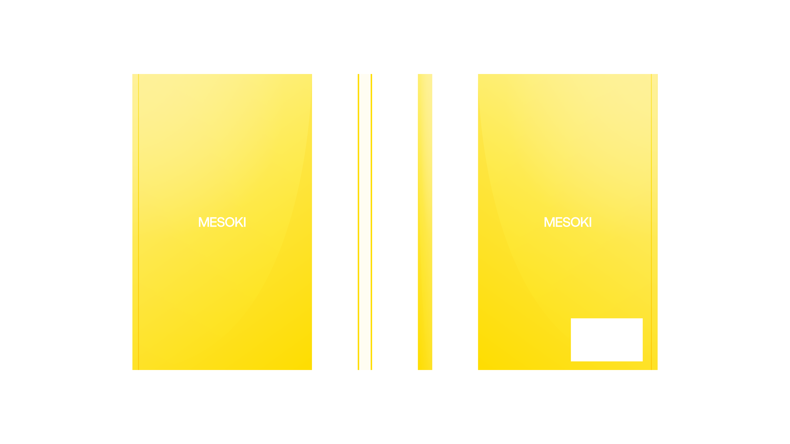

How I Developed Mesoki, a Minimalist Brand Bridging Physical and Digital.
Mesoki. Nov 23.
Established a minimalist stationery brand that seamlessly blends functional design and engaging digital storytelling.
Mesoki is a carefully crafted minimalist brand that combines tactile stationery with immersive digital experiences, creating harmony between form and function.

"Solid Collection" Brand Identity.
Beginning.
Mesoki didn't start as a stationery brand. Initially, I imagined it as a line of magnetic iPhone accessories with playful colors and subtle geometry. The accessories were promising, but something about the tactility of paper—its quietness—kept pulling me in.
Yellow Mesoki notebook front and back.
Research and Observation.
To understand what made a notebook feel "right," I collected dozens—Japanese, European, academic, creative. I documented their structure, materials, page balance, weight, binding types. It wasn't research in the formal sense, but more like observation with purpose. I looked for moments when form supported clarity.
Problem.
I began noticing how cluttered most notebooks felt. I wanted to build something that wouldn't interrupt thought but instead gently hold it. So I paused the accessories path and redirected the brand toward notebooks.

Red Mesoki notebook front and back.
Design and Interaction.
I set a constraint early: the front cover should have only one word. I also decided each notebook would live in a color—flat, vibrant, self-contained. The identity had to speak in simplicity, and color became the language.
Takeaway.
Mesoki taught me how to listen—to color, to weight, to white space. It made me more patient. Less obsessed with cleverness. More focused on rhythm, balance, and staying out of the way when it's not your turn to speak.
More in Projects.
Developed intuitive digital cockpits integrating real-time data visualization, driver-centric design, and responsive interfaces.
Crafted native-style widgets for car controls, bringing Apple's clarity and consistency into everyday driving.
Engineered an innovative mobile app simplifying restaurant interactions through streamlined ordering and efficient pickup.
Designed a vibrant digital music experience tailored specifically to the dynamic preferences of new generation.
Built a versatile no-code tool empowering designers to rapidly prototype and share UI components and full websites.
More in Nuggets.
More in Readings.
A reflection on how Apple Maps uses voice intonation to manage your emotional state while driving, and why Google Maps and Waze don't.
A reflection on finally owning the Pebble 2 Duo, a tiny comeback story about detail, nostalgia, and honest design.
A short manifesto for what Readings is, how I use it, and how to read it.
Copyright Maksim Anisimov.